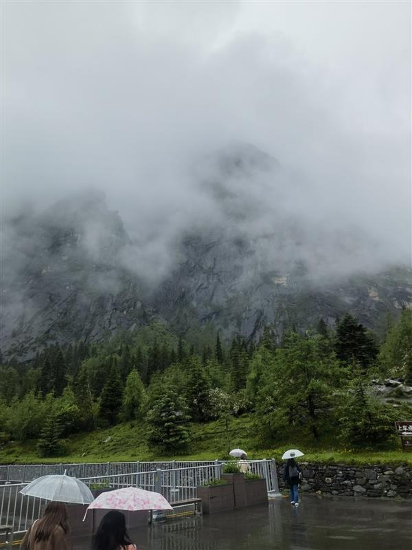
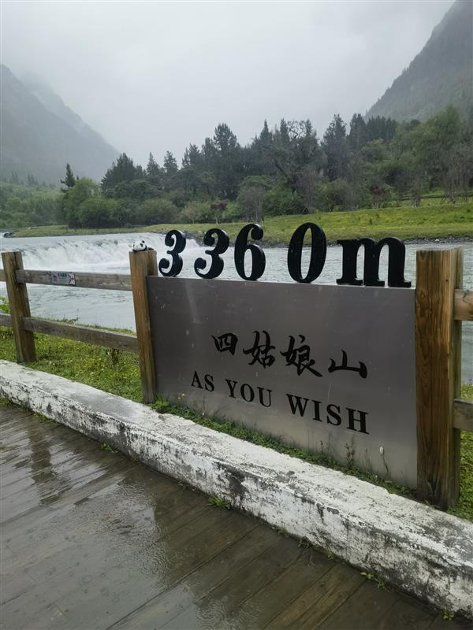
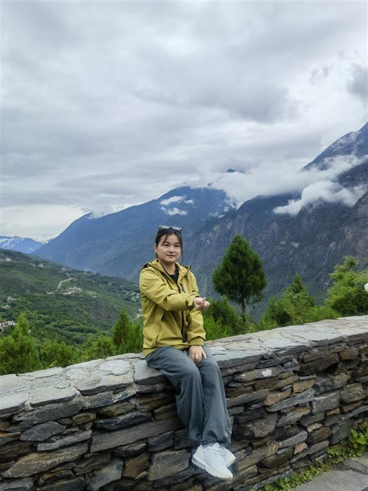
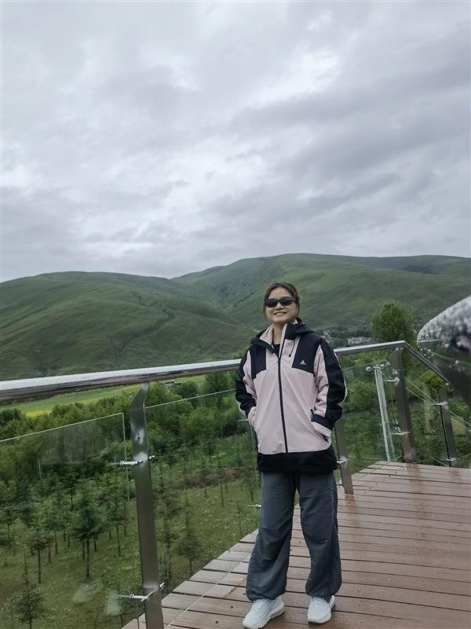
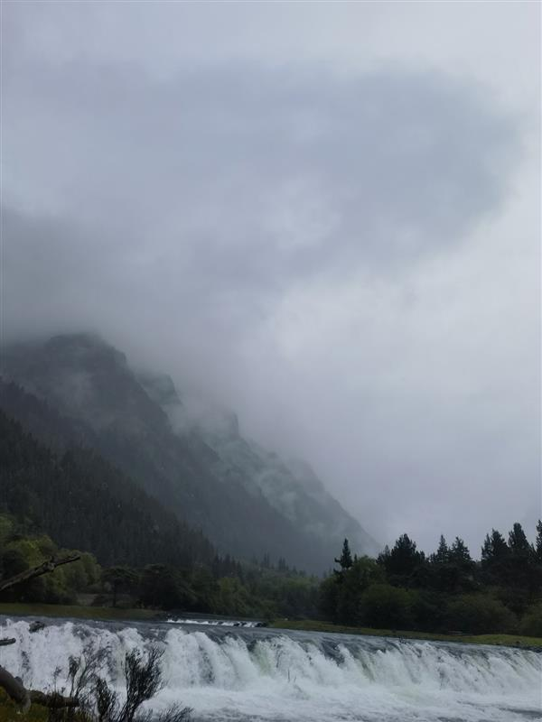
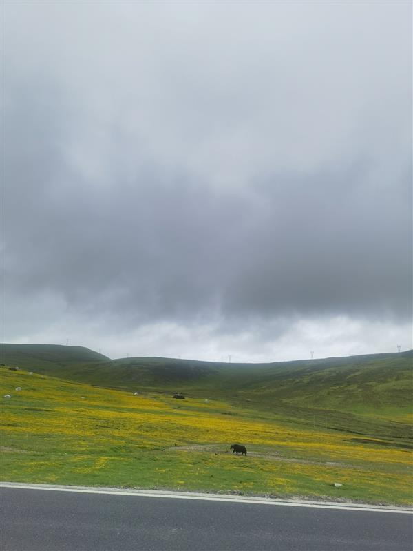
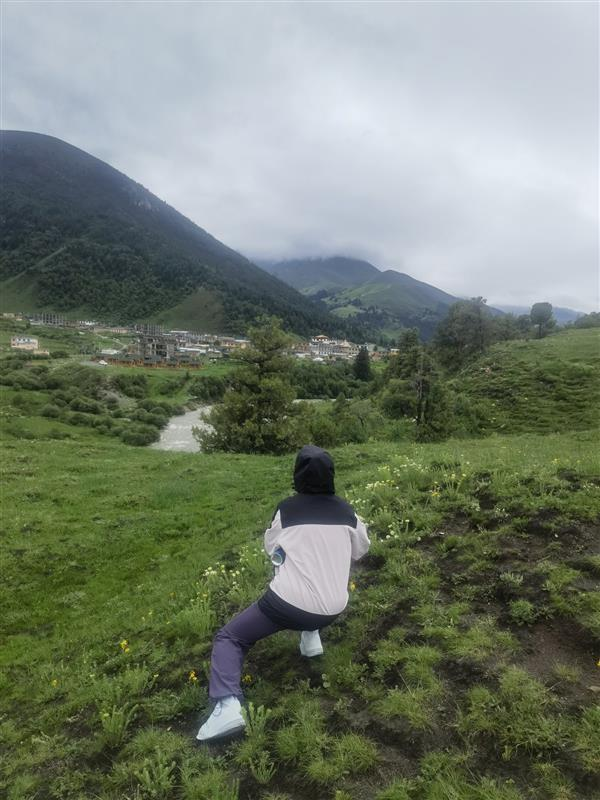
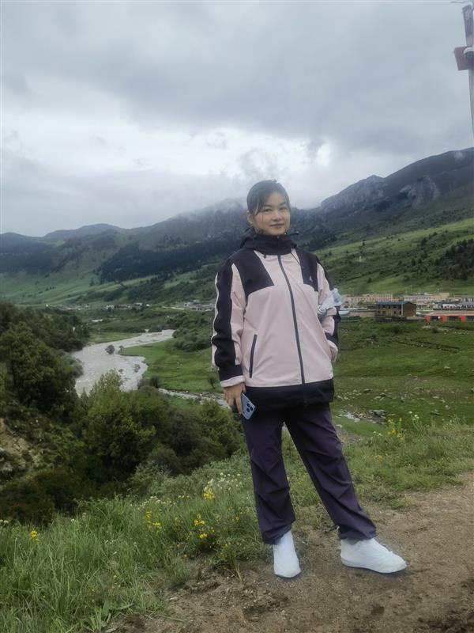

今年六月，决定去一次川西。早就听说那里是"眼睛在天堂，身体在地狱"的地方——山路崎岖、海拔骤变、一天之内历经四季。这一次，我想亲自去感受一下。
🏔️ 第一天：盘山公路的洗礼
车子刚进入川西境内，就知道来者不善。山路越走越窄，弯道一个接一个，几乎是贴着悬崖开过去的。一边是山体，一边是深谷，后视镜里看不到后车，只能盯着前面的路，手心全是汗。

路真的很难走。碎石、落石、偶尔还有塌方的痕迹。司机师傅倒是镇定自若，谈笑风生，仿佛这种路他天天开。我坐在副驾，眼睛不敢往下看，只能死死盯着前方的弯道。

这就是"身在地狱"的第一个小时。路没有尽头，弯没有尽头，只有无尽的蜿蜒和心跳加速的疲惫。
🌡️ 一天过四季：海拔变化带来的视觉震撼
川西最神奇的地方在于，同一天的不同海拔，完全是不同的世界。
早上从康定出发时，还是河谷地带，气温舒适，两旁是绿油油的草甸和成群的牦牛。太阳升高，车子开始爬升，气温一点点降下去。到了海拔四千米以上的垭口，风已经冷得不行，不得不把厚外套翻出来。

而下午下山进入山谷时，又回到了夏日的温度，甚至有点热。一天之内，从春到冬再到夏，身体的感受被海拔无情地切换。这种体验，在其他地方很难体会到。

🌲 植被的垂直分布：大自然的调色盘
随着海拔变化，沿途的植被也在不断变化，像是一块巨大的调色盘被铺展在群山之间。
低海拔处是熟悉的阔叶林，松树、柏树、杂木丛生，绿意盎然。随着海拔上升，针叶林开始占主导，冷杉、云杉笔直地插向天空，树冠被风压成旗形。再往上，树木稀疏了，取而代之的是高山灌丛和草甸，杜鹃花星星点点地散落在碎石间。

到了海拔四五千米的区域，几乎看不到树木了。只有裸露的岩石和稀疏的高山草甸，偶尔能看见几丛耐寒的垫状植物紧贴地面生长。那种荒凉感，让人既震撼又敬畏。

✨ 眼在天堂：那些让人屏息的瞬间
但所有这些艰辛，都在看到那些风景的瞬间变得值得。
车子翻过一座垭口，远处雪山赫然出现在眼前，阳光打在雪峰上，金光闪闪。那一刻，所有的疲惫、所有的紧张都烟消云散，只剩下心脏被美景击中的震撼。

河谷两岸的经幡在风中猎猎作响，藏族的村落点缀在山腰间，牛羊肉的香气从某些路边小馆飘出来。天空蓝得不真实，云朵低得好像伸手就能碰到。

站在海拔四千米的地方，看着远处的雪山、近处的草甸、头顶的蓝天，你会忽然明白什么叫"眼在天堂"。所有的辛苦——崎岖的山路、剧烈的高反、一天之内换三套衣服——都值了。
💭 后记
川西之行，是对身体的一次考验，也是对眼睛的一次款待。那些弯道让人手心出汗，那些海拔让人喘不过气，但那些风景，真的让人终身难忘。
如果你也打算去川西，做好准备：路很难走，海拔很高，温差很大。但只要你翻过那座山，一切都会值得。
眼在天堂，身在地狱——这就是川西。
— Jessie